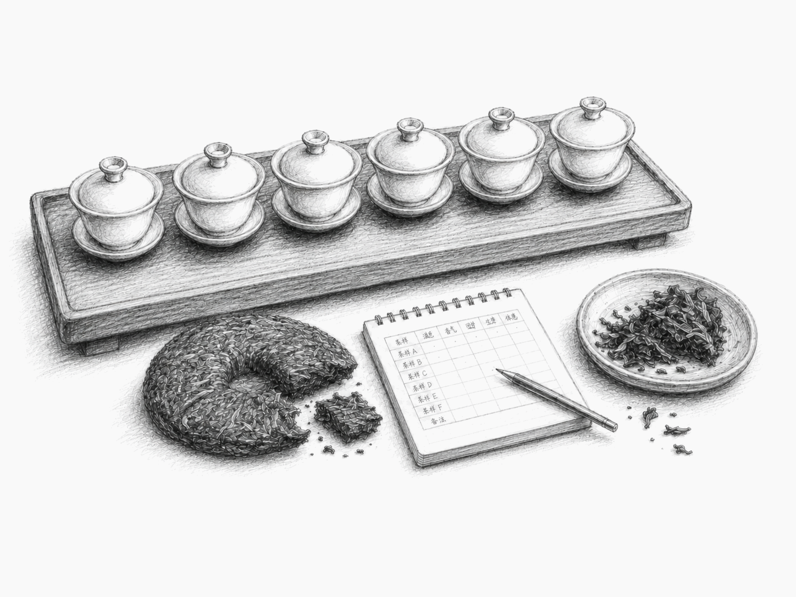
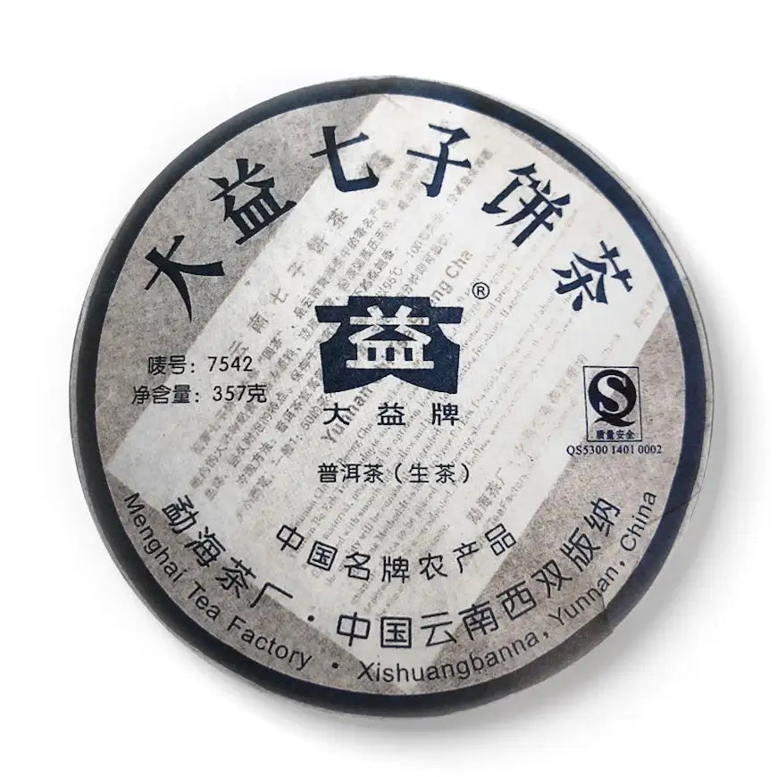
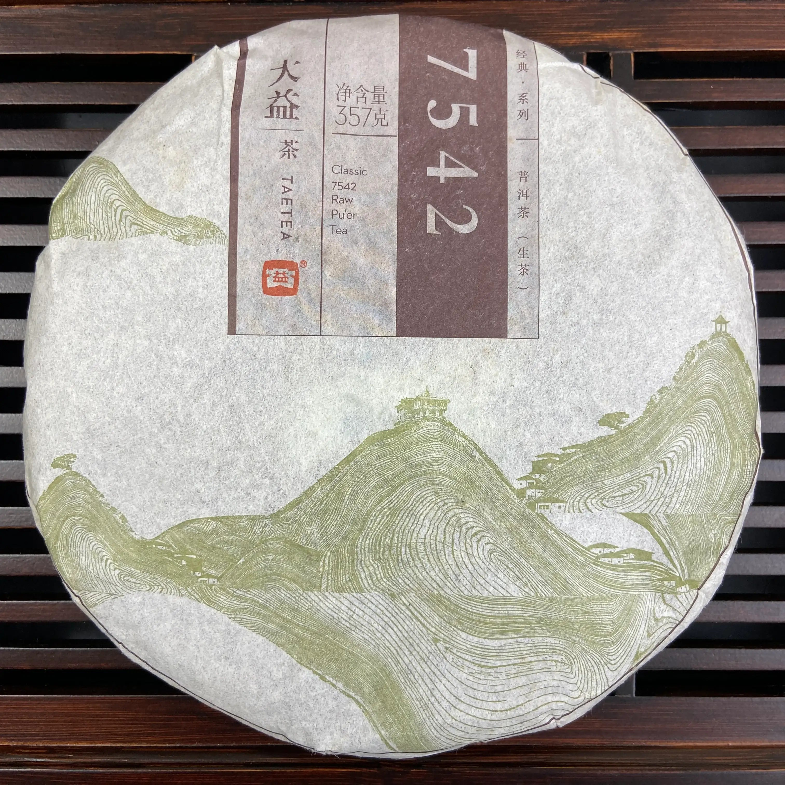
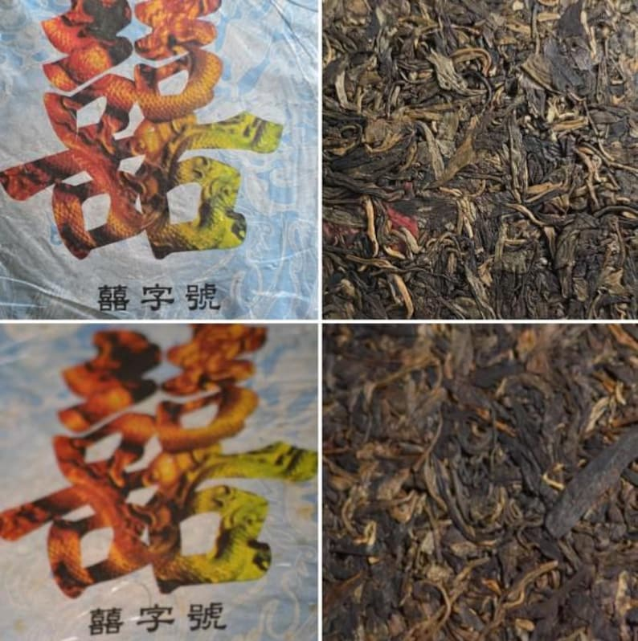
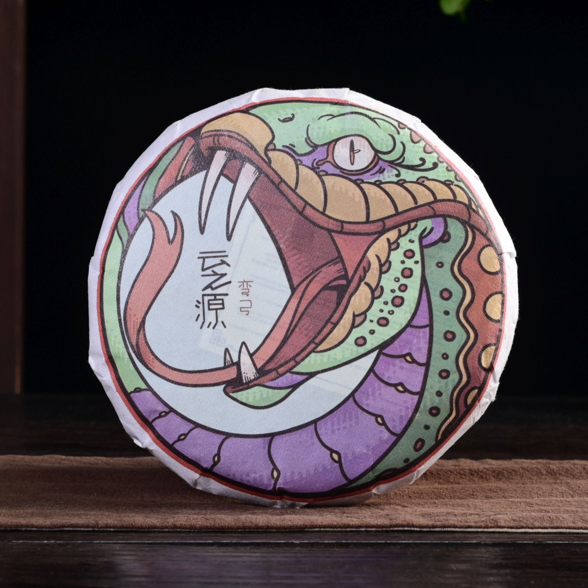
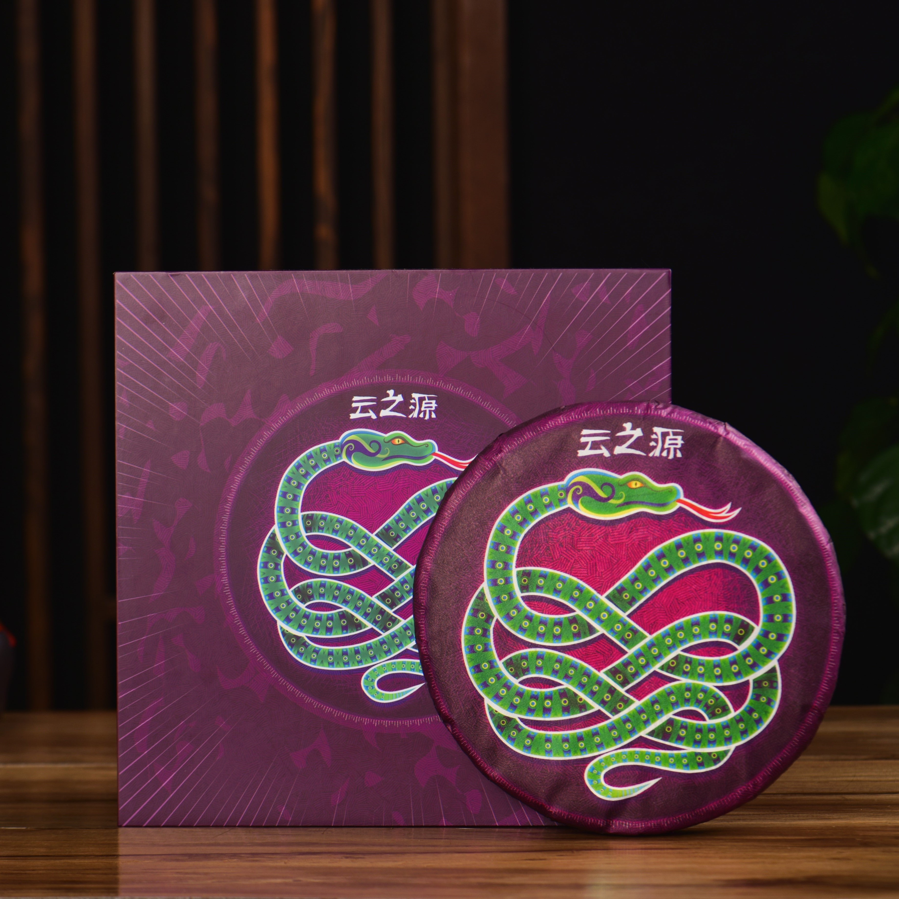

A new tea project

The first three are already live.
Flight 01
Compare three productions across nearly two decades.


What differs when the recipe name stays the same—but years, batches, and histories do not?
Photos: King Tea MallFlight 02
The same 2007 XiZi Hao, stored in two places.

USA TaiwanHow does storage shape what reaches the cup?
Photo: Liquid ProustFlight 03
A side-by-side exploration of regional character.


Two 2025 teas. One shared protocol. What can we actually observe?
Photos: Yunnan Sourcing